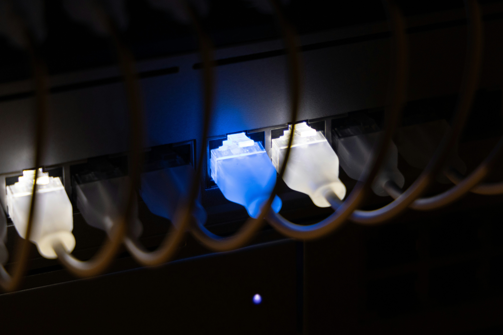

Netwerken
Configuratie en analyse van een lokaal netwerk op basis van het OSI- en TCP/IP-model.

Wat heb ik geleerd?
Dit project gaf me een grondige basis in hoe netwerken echt werken. Door het OSI-model toe te passen op concrete situaties werd duidelijk welke laag verantwoordelijk is voor welke functie — van de fysieke verbinding tot de applicatielaag. Met Wireshark kon ik effectief netwerkverkeer opvangen en analyseren, wat een onmisbaar hulpmiddel is bij troubleshooting.
Ik leerde ook hoe IP-subnetting in de praktijk werkt, hoe je een correct subnetmasker kiest voor een gegeven netwerkomvang, en hoe VLAN-segmentatie bijdraagt aan veiligheid en performantie in een bedrijfsnetwerk.
Uitdagingen
De overstap van theorie naar praktische configuratie was een leerproces. Subnetting correct toepassen zonder fouten vroeg veel oefening. Het interpreteren van Wireshark-output — met honderden pakketjes tegelijk — vergde analytisch denken en gericht filteren.